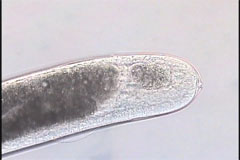
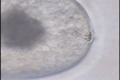
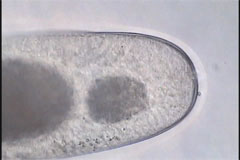
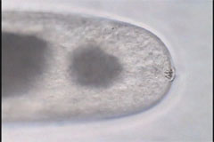

Agamermis
D April 17, 2006 Parasitic Stage Tail
Virtual specimen prepared by Melissa Yoder and Guoxiu Wang
Click here for scale bars
Click on the appropriate image below to open the relevant clip.

tail 20x1.6x0.35x

tail 60x1.6x0.35x

tail 60x1x0.35x

tail 60x1x0.35x
copyright 2002